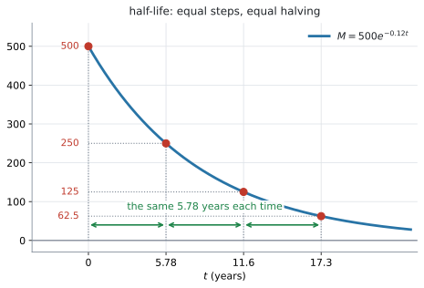
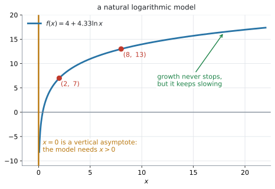
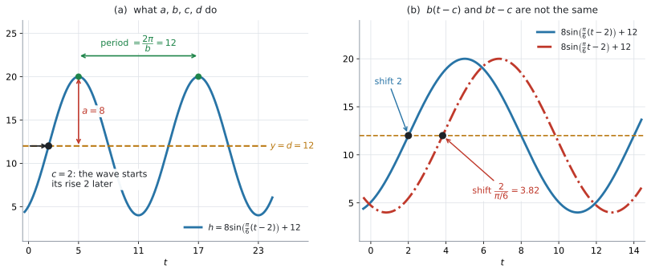
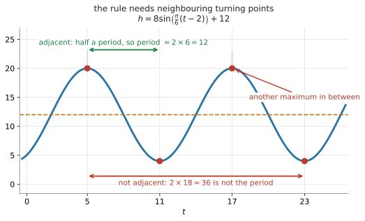

AHL 2.9a — Half-life, natural logarithmic and sinusoidal models（半減期・自然対数モデル・正弦モデル）
- 指数の減衰モデルから half-life（半減期）を求め、それがはじめの量によらないことを説明できる。
- half-life から減衰の定数 \(k\) を出し、\(k\) から half-life を出せる（両方向）。
- natural logarithmic model（自然対数モデル）\(f(x) = a + b\ln x\) の形を知り、\(2\) 点から \(a\) と \(b\) を求められる。
- \(f(x) = a + b\ln x\) の domain（定義域）が \(x > 0\) であることを、文脈と結びつけて説明できる。
- sinusoidal model（正弦モデル）\(f(x) = a\sin\bigl(b(x-c)\bigr)+d\) の \(4\) 文字を読み分け、ラジアンで period（周期）\(= \dfrac{2\pi}{b}\) を出せる。
- 最大・最小の値と時刻から、\(a\)、\(b\)、\(c\)、\(d\) を決められる。
\(1\) 行だけあります。 ただし、それは logistic function のもので、AHL 2.9b で扱います。
\[ f(x) = \frac{L}{1+Ce^{-kx}}, \quad L,\ C,\ k > 0 \]
このページの \(3\) つのモデルは、\(1\) つも印刷されていません。
- half-life の式 … ありません
- \(f(x) = a + b\ln x\) … ありません
- period \(= \dfrac{2\pi}{b}\) … ありません
とくに period \(= \dfrac{2\pi}{b}\) は、自分で持っておく必要があります。 SL 2.5 で \(\dfrac{360}{b}\) を覚えたはずですが、HL ではラジアンが既定なので \(\dfrac{2\pi}{b}\) のほうを使います（第6節）。
The idea
1. AHL で足される \(5\) つのモデル
SL 2.5 で \(6\) つのモデル（linear、quadratic、exponential、direct/inverse variation、cubic、sinusoidal）を扱いました。HL では、次の \(5\) つが足されます。
表 1 のうち exponential と sinusoidal は、SL でも出ています。HL で新しくなるのは、次の \(3\) 点です。
- exponential … half-life を求める（SL では量そのものを求めるだけでした）
- sinusoidal … ラジアンになり、\(c\)（phase shift）が入る
- natural logarithmic … まるごと新しい形です
2. half-life は「半分になるまでの時間」です
half-life（半減期）は、量が半分になるまでにかかる時間です。放射性物質、体の中の薬、コーヒーのカフェイン——減り方が指数的なものに使います。
\[ M = M_0\,e^{-kt}, \qquad M_0 > 0, \quad k > 0 \tag{1}\]
\(M_0\) ははじめの量、\(k\) は減り方の速さです。量を表すモデルなので、はじめの量 \(M_0\) は正とします。

図 1 が \(M = 500e^{-0.12t}\) です（例 1 でも使います）。\(500 \to 250 \to 125 \to 62.5\) と半分ずつ減っていきますが、そのたびにかかる時間はいつも同じ \(5.78\) 年です。これが half-life です。
half-life を \(T\) と書きます。\(M_0\) が \(\dfrac{1}{2}M_0\) になるまでの時間が \(T\) なので、その \(T\) を求めればよいことになります。
\[ M_0\,e^{-kT} = \frac{1}{2}M_0 \]
です。\(M_0 > 0\) なので、両辺を \(M_0\) で割れます。
\[ e^{-kT} = \frac{1}{2} \]
となり、\(M_0\) が消えます。 \(\ln\) をとって（AHL 1.9）
\[ -kT = \ln\frac{1}{2} = -\ln 2 \]
\[ T = \frac{\ln 2}{k} \tag{2}\]
（\(M_0 = 0\) だと \(M\) はいつも \(0\) で、\(M = \dfrac{1}{2}M_0\) がどの時刻でも成り立ってしまい、half-life が \(1\) つに決まりません。 だから \(M_0 > 0\) としています。）
式 1 の \(k = 0.12\) なら
\[ T = \frac{\ln 2}{0.12} = 5.7762\ldots = 5.78 \text{ 年} \]
\(500\) mg から始めても \(50\) mg から始めても、半分になるまでの時間は同じです。
理由は上の \(2\) 行目にあります。両辺を \(M_0\) で割った時点で、\(M_0\) が式から消えているからです。
State what happens to the half-life if the initial mass is doubled と聞かれたら、答えは「変わらない」です。同じ話が AHL 1.9 にも出ています。
3. half-life と \(k\) は、行き来できます
式 2 は、どちらの向きにも使えます。
| 分かっているもの | 求めるもの | 使う式 |
|---|---|---|
| \(k\) | half-life \(T\) | \(T = \dfrac{\ln 2}{k}\) |
| half-life \(T\) | \(k\) | \(k = \dfrac{\ln 2}{T}\) |
\(e\) を使わずに、半分にする回数で書く形もあります。
\[ M = M_0\left(\frac{1}{2}\right)^{\frac{t}{T}} \tag{3}\]
\(t = T\) なら指数が \(1\) で半分、\(t = 2T\) なら \(\dfrac{1}{4}\) です。式 1 と 式 3 は同じもので、\(k\) と \(T\) が 式 2 で結ばれています。
4. natural logarithmic model \(f(x) = a + b\ln x\)
シラバスが指定している形です。
\[ f(x) = a + b\ln x \tag{4}\]

図 2 は \(b > 0\) の場合です。\(b > 0\) なら、はじめは急に上がり、そのあと増え方が緩やかになります。 上限はなく、\(x\) が大きくなると増加を続けます。
\(b < 0\) ならグラフの上下が反転します。 はじめは急に下がり、そのあと下がり方が緩やかになります。
式 4 の（\(b > 0\) のときの）使いどころは、「増えるけれど、だんだん増え方が鈍る」場面です。学習の習熟度、音の大きさの感じ方、地震の規模——pH scale、Richter scale、sound intensity は、どれも対数の目盛りです。
大事な点が \(2\) つあります。
- domain は \(x > 0\) です。 \(\ln 0\) も \(\ln(\text{負})\) も定義されません。図 2 で、\(x = 0\) が vertical asymptote（垂直漸近線）になっています
- \(b > 0\) なら increasing（増加）、\(b < 0\) なら decreasing（減少）です。\(b = 0\) なら \(f(x) = a\) という constant function（定数関数）になり、\(x\) による変化を表さないモデルになります。\(\ln x\) 自体は増える関数なので、向きは \(b\) の符号で決まります
「\(t = 0\) のときの値」を聞かれる文脈問題では、この形は使えません。
\(f(x) = 4 + 4.33\ln x\) で \(x = 0\) とすると、\(\ln 0\) が定義されないので値がありません。それどころか、\(x\) を \(0\) に近づけると \(f(x)\) はいくらでも小さくなります（図 2 の左端）。
文脈問題では、\(x \geq 1\) のように始まりの点を決めて使います（演習 \(7\)）。
5. \(a\) と \(b\) は、\(2\) 点から出します
パラメータの決め方は SL 2.6 と同じです（Guidance の Link to: modelling skills (SL2.6) は、この項目全体にかかっています）。\(2\) 点を入れて、連立方程式にします。
\((2,\ 7)\) と \((8,\ 13)\) を通るとします。
\[ a + b\ln 2 = 7 \]
\[ a + b\ln 8 = 13 \]
引き算すると \(a\) が消えます。
\[ b(\ln 8 - \ln 2) = 6 \]
\(\ln 8 - \ln 2 = \ln 4\) です（AHL 1.9）。
\[ b = \frac{6}{\ln 4} = 4.3280\ldots \]
\(1\) つ目の式にもどして
\[ a = 7 - 4.3280\ldots \times \ln 2 = 7 - 3 = 4 \]
\(\ln\) の値は、丸めずに電卓の中のまま使ってください（GDC）。
6. sinusoidal model ── HL はラジアンです
\[ f(x) = a\sin\bigl(b(x-c)\bigr)+d \tag{5}\]
SL 2.5 では \(a\sin(bx)+d\) の形で、度数法で扱いました。HL では \(c\) が入り、ラジアンが既定になります。
ここでは \(b > 0\) とします。\(b\) が負のときの period は \(\dfrac{2\pi}{\lvert b \rvert}\) です。\(\sin(-2x)\) の period は \(\pi\) で、\(\dfrac{2\pi}{-2} = -\pi\) ではありません。
SL で覚えた \(\dfrac{360}{b}\) は、度数法のときの式です。
\[ \text{ラジアン} \ \Rightarrow \ \text{period} = \frac{2\pi}{b}, \qquad \text{度数法} \ \Rightarrow \ \text{period} = \frac{360}{b} \]
見分け方は、\(\sin\) の中の角に度の記号 \(^{\circ}\) が付いているかどうかです。\(f(x) = \sin x^{\circ}\) のように書いてあれば度数法、書いてなければラジアンです。摂氏の \(^{\circ}\text{C}\) は角の単位ではないので、これには関係ありません（演習 \(9\)）。
電卓の角の設定も、それに合わせて変えてください（GDC）。\(\dfrac{2\pi}{b}\) と \(\dfrac{360}{b}\) を取りちがえると、答えが \(57.3\) 倍ずれます（演習 \(10\)）。
7. \(a\)、\(b\)、\(c\)、\(d\) の \(4\) 文字

図 3 の (a) が、\(h = 8\sin\left(\dfrac{\pi}{6}(t-2)\right)+12\) です。
| 文字 | 名前 | 読み方 | 図では |
|---|---|---|---|
| \(a\) | amplitude（振幅） | 中心線からの高さ。\(\lvert a \rvert\) | \(8\) |
| \(b\) | — | period \(= \dfrac{2\pi}{b}\)（\(b > 0\)） | \(\dfrac{\pi}{6}\)、period \(12\) |
| \(c\) | phase shift（位相のずれ） | 横に \(c\) だけ右へ | \(2\) |
| \(d\) | principal axis（中心線） | \(y = d\) | \(12\) |
\(c\) を「phase shift と呼ぶことがある」と、Guidance がわざわざ断っています（例 4 の (c) で問われる形です）。
これは AHL 2.8 の平行移動そのものです。 \(\sin\) の中で \(x\) が \(x-c\) になっているので、\(c > 0\) なら右に \(c\)、\(c < 0\) なら左に \(\lvert c \rvert\) です。
最大値と最小値からは、次のように決まります。以下、\(a > 0\)、\(b > 0\) にとります。
\[ \lvert a \rvert = \frac{\text{最大} - \text{最小}}{2}, \qquad d = \frac{\text{最大} + \text{最小}}{2} \tag{6}\]
\[ \text{period} = 2 \times \lvert \text{最大の時刻} - \text{最小の時刻} \rvert \tag{7}\]
式 7 は、となり合う最大と最小のあいだが、ちょうど半周期だからです。あいだに別の山や谷をはさんだ最大と最小では使えません。

図 4 で確かめてください。\(t = 5\) の最大と \(t = 11\) の最小はとなり合っているので、\(2(11-5) = 12\) が period です。\(t = 23\) も最小ですが、あいだに \(t = 17\) の最大がはさまっているので、\(2(23-5) = 36\) は period になりません。
\(c\) を読むときは、かっこの中の形に気をつけてください。 式 5 は \(a\sin\bigl(b(x-c)\bigr)+d\) で、\(b\) がかっこの外にあります。\(a\sin(bx-c)+d\) と書くと別のものになるので（図 3 の (b)）、かっこの中を \(b(x-c)\) の形に因数分解してから \(c\) を読みます（AHL 2.8 と同じ読み方です）。
Why it works
なぜ period が \(\dfrac{2\pi}{b}\) になるのか。 \(\sin\) は、中身が \(2\pi\) 増えるごとに \(1\) 周します。中身は \(b(x-c)\) ですから、\(x\) が \(P\) 増えたときに中身が \(2\pi\) 増えるとすると
\[ bP = 2\pi \ \Longrightarrow \ P = \frac{2\pi}{b} \]
です。\(c\) は出てきません。 横にずらしても、くり返しの速さは変わらないからです。
Worked examples
問題文は英語です。意味が理解できなかったら、問題文の下の「日本語訳」を開いてください。解説は日本語です。
例題 1 The mass of a radioactive sample, in milligrams, is modelled by
\[ M(t) = 500e^{-0.12t} \]
where \(t\) is the time in years.
(a) Find the mass after \(10\) years.
(b) Find the half-life of the sample.
(c) Find the time taken for the mass to fall to \(100\) mg.
日本語訳
ある放射性試料の質量（ミリグラム）が、上の式でモデル化されます。\(t\) は経過年数です。
(a) \(10\) 年後の質量を求めなさい。
(b) この試料の half-life を求めなさい。
(c) 質量が \(100\) mg まで減るのにかかる時間を求めなさい。
(a) \(t = 10\) を入れるだけです。
\[ M(10) = 500e^{-1.2} = 150.59\ldots = 151 \text{ mg} \]
(b) 半分の \(250\) mg になる時刻を求めます。式 2 を使ってもよいのですが、定義から書き出したほうが安全です。
\[ 500e^{-0.12t} = 250 \]
\[ e^{-0.12t} = \frac{1}{2} \]
\(\ln\) をとります。
\[ -0.12t = -\ln 2 \]
\[ t = \frac{\ln 2}{0.12} = 5.7762\ldots = 5.78 \text{ 年} \]
検算。 \(500e^{-0.12 \times 5.7762} = 250.00\) ✓ ちょうど半分になりました。
(c) こんどは \(100\) です。半分ではないので、式 2 は使えません。
\[ 500e^{-0.12t} = 100 \]
\[ e^{-0.12t} = 0.2 \]
\[ -0.12t = \ln 0.2 \]
\[ t = \frac{-\ln 0.2}{0.12} = \frac{\ln 5}{0.12} = 13.41\ldots = 13.4 \text{ 年} \]
\(-\ln 0.2 = \ln 5\) です。電卓では \(\ln 0.2\) のまま入れて構いません。
検算。 half-life が \(5.78\) 年なので、\(2\) 回で \(125\) mg（\(11.6\) 年）。\(100\) mg はそれより少し先です。\(13.4 > 11.6\) ✓ つじつまが合っています。
(a) \[M(10) = 500e^{-1.2} = 151 \text{ mg}\]
(b) \[500e^{-0.12t} = 250 \ \Rightarrow \ e^{-0.12t} = 0.5 \ \Rightarrow \ -0.12t = \ln 0.5\] \[t = 5.78 \text{ years}\]
(c) \[500e^{-0.12t} = 100 \ \Rightarrow \ e^{-0.12t} = 0.2 \ \Rightarrow \ t = \frac{\ln 0.2}{-0.12} = 13.4 \text{ years}\]
例題 2 The amount of caffeine in a person’s body decreases exponentially with a half-life of \(5\) hours. A person drinks a coffee containing \(200\) mg of caffeine.
(a) Write a model of the form \(A = A_0 e^{-kt}\) for the amount \(A\) mg of caffeine remaining after \(t\) hours, giving \(k\) correct to \(3\) significant figures.
(b) Find the amount of caffeine remaining after \(12\) hours.
(c) Find how long it takes for the amount to fall below \(20\) mg.
日本語訳
ある人の体内のカフェインは指数的に減り、half-life は \(5\) 時間です。この人が、カフェインを \(200\) mg 含むコーヒーを飲みます。
(a) \(t\) 時間後に残るカフェインの量 \(A\) mg について、\(A = A_0 e^{-kt}\) の形のモデルを書きなさい。\(k\) は有効数字 \(3\) 桁で答えなさい。
(b) \(12\) 時間後に残るカフェインの量を求めなさい。
(c) 量が \(20\) mg を下回るまでにかかる時間を求めなさい。
(a) 今度は half-life から \(k\) を出します（表 2）。
\[ k = \frac{\ln 2}{5} = 0.138629\ldots = 0.139 \]
\(A_0 = 200\) なので
\[ A = 200e^{-0.139t} \]
(b) \(t = 12\) を入れます。丸めた \(0.139\) ではなく、電卓の中の \(k\) をそのまま使ってください。 (a) で \(0.139\) と答えるのは書くときの話で、計算には丸めていない値を使います。 この \(2\) つは別のことです。
\[ A = 200e^{-0.138629 \times 12} = 37.89\ldots = 37.9 \text{ mg} \]
検算。 式 3 でも出します。\(12\) 時間は half-life \(2.4\) 個ぶんです。
\[ 200\left(\frac{1}{2}\right)^{2.4} = 37.89\ldots \]
✓ \(2\) つの道が一致しました。
(c) \(20\) mg になる時刻を求めます。
\[ 200e^{-0.138629t} = 20 \]
\[ e^{-0.138629t} = 0.1 \]
\[ t = \frac{\ln 0.1}{-0.138629} = 16.60\ldots = 16.6 \text{ 時間} \]
below なので、\(16.6\) 時間を過ぎてから下回ります。
\(k = 0.139\)（\(3\) s.f.）で (b) を計算すると \(37.72\) mg、\(k\) をそのまま使うと \(37.89\) mg です。\(3\) s.f. の答えが \(37.7\) mg と \(37.9\) mg に分かれてしまいます。
\(3\) 桁で答えるのは最後だけにしてください。途中で丸めると、指数の中で誤差が広がります。電卓に \(k\) という名前で保存しておくのがいちばん確実です（GDC）。
(a) \[e^{-5k} = 0.5 \ \Rightarrow \ k = \frac{\ln 2}{5} = 0.139\] \[A = 200e^{-0.139t}\]
(b) \[A = 200e^{-0.138629 \times 12} = 37.9 \text{ mg}\]
(c) \[200e^{-kt} = 20 \ \Rightarrow \ e^{-kt} = 0.1 \ \Rightarrow \ t = 16.6 \text{ hours}\]
例題 3 The height of a young tree, in centimetres, is modelled by \(h(x) = a + b\ln x\), where \(x\) is the number of months since it was planted. The tree is \(7\) cm tall after \(2\) months and \(13\) cm tall after \(8\) months.
(a) Find the value of \(a\) and the value of \(b\).
(b) Use the model to predict the height after \(20\) months.
(c) Explain why this model cannot be used to find the height of the tree at the moment it was planted.
日本語訳
若い木の高さ（センチメートル）が \(h(x) = a + b\ln x\) でモデル化されます。\(x\) は植えてからの月数です。この木は \(2\) か月後に \(7\) cm、\(8\) か月後に \(13\) cm でした。
(a) \(a\) の値と \(b\) の値を求めなさい。
(b) このモデルを使って、\(20\) か月後の高さを予測しなさい。
(c) このモデルでは、植えた瞬間の木の高さを求められない理由を説明しなさい。
(a) 第5節 のとおり、\(2\) 点を入れて連立させます。
\[ a + b\ln 2 = 7, \qquad a + b\ln 8 = 13 \]
引き算します。
\[ b(\ln 8 - \ln 2) = 6 \]
\[ b\ln 4 = 6 \ \Rightarrow \ b = \frac{6}{\ln 4} = 4.3280\ldots = 4.33 \]
\(1\) つ目にもどして
\[ a = 7 - 4.3280\ldots \times \ln 2 = 7 - 3 = 4 \]
検算。 \(4 + 4.3280 \times \ln 8 = 4 + 9.00 = 13.00\) ✓ \(2\) つ目の点も通りました。
(b) \(x = 20\) を入れます。
\[ h(20) = 4 + 4.3280\ldots \times \ln 20 = 4 + 12.96\ldots = 16.9657\ldots = 17.0 \text{ cm} \]
\(8\) か月で \(13\) cm だったものが、\(20\) か月でも \(17\) cm です。伸びが鈍っているのが数でも見えます。
(c) Explain why なので、英語で理由を書きます。
植えた瞬間は \(x = 0\) ですが、\(\ln 0\) は定義されません（第4節）。
試験ではこう書く
Planting corresponds to \(x = 0\), and \(\ln 0\) is not defined, so \(h(0)\) has no value. In fact, as \(x\) approaches \(0\) the value of \(\ln x\) decreases without limit, so the model predicts heights that become arbitrarily large and negative. The model can only be used for \(x > 0\), and in practice only after the tree has been growing for some time.
（植えた瞬間は \(x = 0\) にあたるが、\(\ln 0\) は定義されないので \(h(0)\) には値がない。それどころか \(x\) を \(0\) に近づけると \(\ln x\) は限りなく小さくなるので、モデルはいくらでも大きな負の高さを出してしまう。このモデルは \(x > 0\) でしか使えず、実際には木がある程度育ったあとにしか使えない、という意味です。）
(a) \[a + b\ln 2 = 7, \quad a + b\ln 8 = 13\] \[b\ln 4 = 6 \ \Rightarrow \ b = 4.33, \quad a = 4\]
(b) \[h(20) = 4 + \frac{6}{\ln 4}\ln 20 = 17.0 \text{ cm}\]
(c) \(x = 0\) gives \(\ln 0\), which is not defined, so the model has no value there. The model requires \(x > 0\).
例題 4 The depth of water in a harbour, in metres, is modelled by \(h(t) = a\sin\bigl(b(t-c)\bigr)+d\), where \(t\) is the time in hours after midnight. The first high water is \(20\) m at \(t = 5\), and the first low water is \(4\) m at \(t = 11\).
(a) Find the value of \(a\), of \(b\), of \(c\) and of \(d\).
(b) Find the depth of water at midnight.
(c) Describe what the value of \(c\) tells you about this harbour.
日本語訳
ある港の水深（メートル）が \(h(t) = a\sin\bigl(b(t-c)\bigr)+d\) でモデル化されます。\(t\) は真夜中からの経過時間（時間）です。最初の満潮は \(t = 5\) で \(20\) m、最初の干潮は \(t = 11\) で \(4\) m です。
(a) \(a\)、\(b\)、\(c\)、\(d\) の値を求めなさい。
(b) 真夜中の水深を求めなさい。
(c) \(c\) の値がこの港について何を表しているかを述べなさい。
(a) 式 6 から始めます。
\[ a = \frac{20-4}{2} = 8, \qquad d = \frac{20+4}{2} = 12 \]
period は 式 7 です。満潮から干潮までが半周期なので
\[ \text{period} = 2 \times (11-5) = 12 \text{ 時間} \]
ラジアンなので（第6節）
\[ \frac{2\pi}{b} = 12 \ \Rightarrow \ b = \frac{2\pi}{12} = \frac{\pi}{6} \]
\(c\) は、\(\sin\) が最大になるところから決めます。\(\sin\) が最大になるのは中身が \(\dfrac{\pi}{2}\) のときで、それが \(t = 5\) です。
\[ \frac{\pi}{6}(5-c) = \frac{\pi}{2} \]
\[ 5-c = 3 \ \Rightarrow \ c = 2 \]
\[ h(t) = 8\sin\left(\frac{\pi}{6}(t-2)\right)+12 \]
検算。 \(h(11) = 8\sin\left(\dfrac{\pi}{6} \times 9\right)+12 = 8\sin\dfrac{3\pi}{2}+12 = -8+12 = 4\) ✓ 干潮と合いました。
(b) 真夜中は \(t = 0\) です。電卓をラジアンにしてから入れてください。
\[ h(0) = 8\sin\left(-\frac{\pi}{3}\right)+12 = 8 \times (-0.8660\ldots)+12 = 5.0717\ldots = 5.07 \text{ m} \]
干潮の \(4\) m に近い値です。図 3 の (a) で、\(t = 0\) が谷の近くにあることを確かめてください。
(c) Describe なので、言葉で答えます。\(c = 2\) は phase shift です。
試験ではこう書く
The value \(c = 2\) is the phase shift: the whole tidal pattern is shifted \(2\) hours to the right. It means that the water is at its mean depth of \(12\) m and rising at \(t = 2\), that is, at \(2\) a.m. Equivalently, the tide reaches high water \(3\) hours later, one quarter of the \(12\)-hour period after \(t = 2\).
（\(c = 2\) は phase shift で、潮の動き全体が \(2\) 時間だけ右にずれていることを表す。\(t = 2\)、つまり午前 \(2\) 時に水深が平均の \(12\) m で、しかも上がっている途中である、という意味である。言いかえれば、そこから \(12\) 時間周期の \(4\) 分の \(1\) である \(3\) 時間後に満潮になる、という意味です。）
(a) \[a = \frac{20-4}{2} = 8, \qquad d = \frac{20+4}{2} = 12\] \[\text{period} = 2(11-5) = 12 \ \Rightarrow \ b = \frac{2\pi}{12} = \frac{\pi}{6}\] \[\frac{\pi}{6}(5-c) = \frac{\pi}{2} \ \Rightarrow \ c = 2\]
(b) \[h(0) = 8\sin\left(-\frac{\pi}{3}\right)+12 = 5.07 \text{ m}\]
(c) \(c = 2\) is the phase shift: the pattern is moved \(2\) hours to the right, so the depth is at its mean of \(12\) m and rising at \(2\) a.m.
Common errors
\(M = 500e^{-0.12t}\) の half-life を求めるとき、\(500\) は要りません。
\[ e^{-0.12t} = \frac{1}{2} \]
まで割ってしまえば、あとは \(\ln\) をとるだけです（第2節）。
Find the half-life で \(M_0\) が与えられていなくても解けます。\(M_0\) が消えるのが、half-life の本質です。
SL では度数法だったので \(\dfrac{360}{b}\) でした。HL の既定はラジアンなので \(\dfrac{2\pi}{b}\) です（第6節）。
\(b = 3\) なら、ラジアンで \(\dfrac{2\pi}{3} = 2.09\)、度数法で \(\dfrac{360}{3} = 120\)。まったく違う数です。
\(\sin\) や \(\cos\) の中の角に \(^{\circ}\) が付いているかどうかを、先に確かめてください。付いていなければラジアンです（演習 \(10\)）。
\(k = \dfrac{\ln 2}{5} = 0.138629\ldots\) を \(0.139\) にしてから \(12\) 時間後を計算すると、答えが \(0.17\) mg ずれ、\(3\) s.f. の答えまで \(37.9\) mg から \(37.7\) mg に変わります。
指数の中の誤差は、外に出るときに広がります。 \(k\) は電卓に保存して、そのまま使ってください（GDC）。
答えを \(3\) 桁に丸めるのは、最後の \(1\) 回だけです。
Using your GDC (TI-Nspire CX II)
1. 角の設定を、いちばん先に確かめます
doc → Settings → Document SettingsAngle を Radian にします。AHL の sinusoidal model はラジアンが既定です（第6節）。
問題文に \(\sin x^{\circ}\) のように度の記号が付いていたら、Degree に変えるか、式の中に度の記号を入れてください。度の記号は、キーボードのいちばん下、左端の π のキーを押すと開く記号パレットから選べます。
設定が合っていないと、答えの数字はもっともらしいのに全部ずれます。 ここは毎回確かめる価値があります。
2. \(k\) を保存して、丸めずに使う
Calculator ページで、名前を付けて保存します。
\(\dfrac{\ln(2)}{5} \ \to \ k\)
→ は ctrl を押してから var キーで入ります。k := ln(2)/5 のように := で書いても同じです。あとは
\(200 \times e^{-k \times 12}\)
と打つだけで、丸めのない値が出ます（例 2）。
同じやり方で、\(\ln\) モデルの \(b\) も保存できます。
\(\dfrac{6}{\ln(4)} \ \to \ b\)
e と π は、キーで入れてください
アルファベットとして打った e や pi は、ただの変数になります。数としての \(e\) は e^x キー、\(\pi\) は π キー（または記号パレット）で入れてください。
変数のまま計算すると、エラーになるか、意味のない値が返ります。
3. 方程式は、graph の交点で解くのが確実です
「\(100\) mg になるのはいつか」のような問題は、グラフの交点で解けます。
ctrl + doc → Add Graphs- \(f1(x) = 500 \times e^{-0.12 \times x}\)
- \(f2(x) = 100\)
としてから、menu → Analyze Graph → Intersection で交点を読みます（SL 2.4 と同じ操作です）。
CX II に solve( はありません。数値で解く nSolve( はありますが、交点のほうがグラフで形も見えるので確実です。
\(\ln\) を使った手計算と、交点の値が合うかを見てください。 両方できるようにしておくと、どちらかが詰まっても進めます。
4. sinusoidal は、まずグラフで形を見る
\(a\)、\(b\)、\(c\)、\(d\) を求めたら、そのままグラフにして最大・最小を確かめます。
\(f1(x) = 8 \times \sin\left(\dfrac{\pi}{6} \times \left(x - 2\right)\right) + 12\)
menu → Analyze Graph → Maximum で、\(t = 5\) 付近に \(20\) が出れば合っています。
window は period に合わせてください。 \(x\) を \(0\) から \(24\)、\(y\) を \(0\) から \(24\) くらいにすると、\(2\) 周ぶんが見えます。
Zoom - Fit は、いまの \(x\) の範囲に合わせて \(y\) の範囲だけを合わせます。 \(x\) の範囲が \(1\) 周期に足りないままだと、波が \(1\) 周も見えません。\(x\) を先に決めてください（SL 2.5 と同じ注意です）。
5. 検算のしかた
- half-life を出したら、その時間だけ進めて半分になるかを電卓で確かめる
- \(k\) を出したら、\(e\) の式と \(\left(\frac{1}{2}\right)^{\frac{t}{T}}\) の式の両方で計算して突き合わせる（式 3）
- \(\ln\) モデルの \(a\)、\(b\) を出したら、もう \(1\) つの点を入れて合うか見る
- sinusoidal は、最大・最小の値と時刻をグラフで読んで、問題文と合わせる
\(1\) つ目と \(2\) つ目が、とくに効きます。\(2\) つの道で同じ数が出れば、電卓の打ちまちがいはありません。
ただし、\(2\) つの形は \(k = \dfrac{\ln 2}{T}\) で結ばれた同じ式です。\(T\) そのものを問題文から読みまちがえていると、両方とも同じだけずれます。 \(T\) は問題文にもどって確かめてください。
Exercises
各問題に、折りたたみが3つ付いています。日本語訳、解答例（答案用紙に書くべきこと。英語です）、解説（なぜそうなるか。日本語です）。
まず自分で解いて、次に解答例と見くらべてください。解説は、合わなかったときだけ開けば十分です。
1 The mass of a substance is modelled by \(M = 60e^{-0.05t}\) grams, where \(t\) is measured in days. Find the half-life of the substance.
日本語訳
ある物質の質量が \(M = 60e^{-0.05t}\) グラムでモデル化されます。\(t\) の単位は日です。この物質の half-life を求めなさい。
\[60e^{-0.05t} = 30 \ \Rightarrow \ e^{-0.05t} = 0.5\]
\[-0.05t = \ln 0.5 \ \Rightarrow \ t = \frac{\ln 2}{0.05} = 13.9 \text{ days}\]
\(60\) は、\(2\) 行目で消えます（第2節）。
\(\dfrac{\ln 2}{0.05} = 13.8629\ldots\) なので、\(3\) s.f. で \(13.9\) 日です。
検算。 \(60e^{-0.05 \times 13.8629} = 30.00\) ✓ ちょうど半分です。
2 A radioactive material has a half-life of \(12\) hours. Find the value of \(k\) in the model \(A = A_0 e^{-kt}\), where \(t\) is measured in hours.
日本語訳
ある放射性物質の half-life は \(12\) 時間です。\(t\) を時間として、モデル \(A = A_0 e^{-kt}\) の \(k\) の値を求めなさい。
\[e^{-12k} = 0.5 \ \Rightarrow \ -12k = \ln 0.5\]
\[k = \frac{\ln 2}{12} = 0.0578\]
表 2 の下の行です。\(k = \dfrac{\ln 2}{T}\) にあてはめても構いませんが、定義から書き出すほうが安全です。
\(A_0\) は与えられていません。要りません。 そこが half-life の性質です。
\(\dfrac{\ln 2}{12} = 0.057762\ldots\) なので \(0.0578\) です。
検算。 \(e^{-0.057762 \times 12} = 0.5000\) ✓
3 A sample of \(300\) mg of a substance has a half-life of \(6\) days. Find the mass remaining after \(15\) days.
日本語訳
\(300\) mg の試料があり、その half-life は \(6\) 日です。\(15\) 日後に残っている質量を求めなさい。
\[M = 300\left(\frac{1}{2}\right)^{\frac{15}{6}} = 300 \times 2^{-2.5} = 53.0 \text{ mg}\]
式 3 を使うのがいちばん速い問題です。\(15\) 日は half-life \(2.5\) 個ぶんです。
\[\frac{15}{6} = 2.5\]
\(300 \times 2^{-2.5} = 53.033\ldots\) なので \(53.0\) mg です。
検算。 \(e\) の形でも出します。\(k = \dfrac{\ln 2}{6} = 0.1155245\ldots\) で
\[300e^{-k \times 15} = 53.033\ldots\]
✓ 一致しました（GDC）。丸めた \(0.11552\) を打つと \(53.0366\) になります。 ここでも、途中で丸めないのが大事です。
「\(2\) 回半分にして \(75\)、そこから少し」という見当も付けておくと、桁のずれに気づけます。\(2.5\) 回なので \(75\) より少し小さい値です。
4 Show that the half-life of the model \(A = A_0 e^{-kt}\), where \(A_0 > 0\) and \(k > 0\), is \(\dfrac{\ln 2}{k}\), and state what this tells you about the effect of changing \(A_0\).
日本語訳
\(A_0 > 0\)、\(k > 0\) として、モデル \(A = A_0 e^{-kt}\) の half-life が \(\dfrac{\ln 2}{k}\) であることを示し、\(A_0\) を変えたときの影響について述べなさい。
Let \(T\) be the half-life. Then
\[A_0 e^{-kT} = \frac{1}{2}A_0\]
Dividing both sides by \(A_0\), which is not zero:
\[e^{-kT} = \frac{1}{2} \ \Rightarrow \ -kT = \ln\frac{1}{2} = -\ln 2 \ \Rightarrow \ T = \frac{\ln 2}{k}\]
The value of \(A_0\) cancels, so the half-life does not depend on the initial amount. Changing \(A_0\) leaves the half-life unchanged.
Show that なので、\(A_0\) が消える行を必ず書いてください。そこがこの問題の中心です。
\(\ln\dfrac{1}{2} = -\ln 2\) の変形も、\(1\) 行入れておくと親切です（AHL 1.9）。
\(T\) を先に文字で置くのがコツです。「半分になるまでの時間を \(T\) とする」と書き出せば、あとは式変形だけになります（第2節）。
試験ではこう書く
Let \(T\) be the half-life, so that \(A_0 e^{-kT} = \tfrac{1}{2}A_0\). Dividing by \(A_0\), which is not zero, gives \(e^{-kT} = \tfrac{1}{2}\), so \(-kT = -\ln 2\) and \(T = \dfrac{\ln 2}{k}\). Because \(A_0\) cancels, the half-life depends only on \(k\): doubling, halving or otherwise changing the initial amount leaves the half-life unchanged.
5 Let \(f(x) = 3 + 5\ln x\) for \(x > 0\).
(a) Find \(f(4)\).
(b) Solve \(f(x) = 20\).
日本語訳
\(x > 0\) に対して \(f(x) = 3 + 5\ln x\) とします。
(a) \(f(4)\) を求めなさい。
(b) \(f(x) = 20\) を解きなさい。
(a) \[f(4) = 3 + 5\ln 4 = 9.93\]
(b) \[3 + 5\ln x = 20 \ \Rightarrow \ \ln x = 3.4 \ \Rightarrow \ x = e^{3.4} = 30.0\]
(a) \(\ln 4 = 1.38629\ldots\) なので \(3 + 6.9315 = 9.9315\)、\(3\) s.f. で \(9.93\) です。
(b) \(\ln x\) を残して、最後に \(e\) を両辺に乗せます。
\[\ln x = \frac{17}{5} = 3.4\]
\(x = e^{3.4} = 29.964\ldots\) なので \(30.0\) です。\(30\) ちょうどではありません。
検算。 \(3 + 5\ln(29.964) = 3 + 5(3.4) = 20.0\) ✓
6 The function \(f(x) = a + b\ln x\) passes through the points \((1,\ 6)\) and \((5,\ 14)\). Find the value of \(a\) and the value of \(b\).
日本語訳
関数 \(f(x) = a + b\ln x\) が点 \((1,\ 6)\) と \((5,\ 14)\) を通ります。\(a\) の値と \(b\) の値を求めなさい。
\[a + b\ln 1 = 6 \ \Rightarrow \ a = 6 \quad (\ln 1 = 0)\]
\[6 + b\ln 5 = 14 \ \Rightarrow \ b = \frac{8}{\ln 5} = 4.97\]
\(\ln 1 = 0\) に気づけば、連立させる必要はありません。 \(x = 1\) の点は、そのまま \(a\) を教えてくれます。
\(\dfrac{8}{\ln 5} = \dfrac{8}{1.60944} = 4.97068\ldots\) なので \(4.97\) です。
検算。 \(6 + 4.97068 \times \ln 5 = 6 + 8.00 = 14.00\) ✓
\(x = 1\) の点が与えられていない問題では、第5節 のように引き算で \(a\) を消してください。
7 A student is asked to model the number of words a child can say, \(x\) months after birth, by \(N(x) = a + b\ln x\). Explain why this model cannot give a value at birth, and suggest what the student could do about it.
日本語訳
ある生徒が、生後 \(x\) か月の子どもが話せる単語数を \(N(x) = a + b\ln x\) でモデル化するように言われました。このモデルが誕生時の値を与えられない理由を説明し、生徒が取れる対応を提案しなさい。
Birth corresponds to \(x = 0\), and \(\ln 0\) is not defined, so \(N(0)\) does not exist. Since the number of words increases with age, \(b > 0\); then \(\ln x\) decreases without limit as \(x\) approaches \(0\), so the model would predict a large negative number of words, which has no meaning here.
The student could restrict the domain, for example to \(x \geq 1\), and state that the model is only used from one month of age onwards.
Explain why なので、英語で理由を書きます。言うべきことは \(2\) つです。
- \(\ln 0\) が定義されない
- \(x \to 0\) で値が負に発散し、文脈に合わない（単語数が負にはなりません）
\(2\) つ目まで書けると、しっかりした答案になります。 「定義されない」だけでは、なぜ困るのかが伝わりません（第4節）。
suggest what the student could do には、domain を制限すると答えます。\(x \geq 1\) は「\(1\) か月から使う」という意味です。
試験ではこう書く
At birth \(x = 0\), and \(\ln 0\) is not defined, so the model gives no value. Since the number of words increases with age, \(b > 0\), and \(\ln x \to -\infty\) as \(x \to 0^{+}\), so close to birth the model predicts a large negative number of words, which is impossible. The student should restrict the domain, for example to \(x \geq 1\), and use the model only from the age of one month.
8 The height of a point on a rotating wheel, in metres, is modelled by \(h(t) = 6\sin\left(\dfrac{\pi}{4}(t-1)\right)+10\), where \(t\) is the time in seconds.
(a) Write down the amplitude, the period and the equation of the principal axis.
(b) Find the first time after \(t = 0\) at which the point is at its highest.
日本語訳
回転する車輪上の点の高さ（メートル）が \(h(t) = 6\sin\left(\dfrac{\pi}{4}(t-1)\right)+10\) でモデル化されます。\(t\) は経過秒数です。
(a) amplitude、period、principal axis の式を書きなさい。
(b) \(t = 0\) より後で、点が最も高くなる最初の時刻を求めなさい。
(a) Amplitude \(6\); period \(= \dfrac{2\pi}{\pi/4} = 8\) seconds; principal axis \(y = 10\).
(b) \[\frac{\pi}{4}(t-1) = \frac{\pi}{2} \ \Rightarrow \ t-1 = 2 \ \Rightarrow \ t = 3 \text{ seconds}\]
(a) 表 3 のとおりに読みます。
period は \(\dfrac{2\pi}{b}\) です。\(b = \dfrac{\pi}{4}\) なので
\[\frac{2\pi}{\pi/4} = 2\pi \times \frac{4}{\pi} = 8\]
\(\dfrac{360}{b}\) を使うと \(458\) という無意味な数が出ます。 度の記号が付いていないので、ラジアンです（第6節）。
(b) \(\sin\) が最大になるのは中身が \(\dfrac{\pi}{2}\) のときです。
検算。 \(h(3) = 6\sin\dfrac{\pi}{2}+10 = 16\) で、これは \(d + a = 10+6\) と合っています ✓ \(1\) つ前の最高は \(3-8 = -5\) 秒なので、\(t = 3\) が \(t = 0\) より後で最初です ✓ 次の最高は \(8\) 秒後の \(t = 11\) です。
9 The temperature in a city, in degrees Celsius, is modelled by \(T(t) = a\sin\bigl(b(t-c)\bigr)+d\), where \(t\) is the time in hours after midnight. The maximum temperature is \(26\,^{\circ}\text{C}\) at \(t = 14\), and the minimum is \(12\,^{\circ}\text{C}\) at \(t = 2\).
(a) Find the value of \(a\), of \(b\), of \(c\) and of \(d\).
(b) Interpret the value of \(d\) in this context.
日本語訳
ある都市の気温（摂氏）が \(T(t) = a\sin\bigl(b(t-c)\bigr)+d\) でモデル化されます。\(t\) は真夜中からの経過時間（時間）です。最高気温は \(t = 14\) で \(26\,^{\circ}\text{C}\)、最低気温は \(t = 2\) で \(12\,^{\circ}\text{C}\) です。
(a) \(a\)、\(b\)、\(c\)、\(d\) の値を求めなさい。
(b) この文脈で \(d\) の値を解釈しなさい。
(a) \[a = \frac{26-12}{2} = 7, \qquad d = \frac{26+12}{2} = 19\]
\[\text{period} = 2(14-2) = 24 \ \Rightarrow \ b = \frac{2\pi}{24} = \frac{\pi}{12}\]
\[\frac{\pi}{12}(14-c) = \frac{\pi}{2} \ \Rightarrow \ 14-c = 6 \ \Rightarrow \ c = 8\]
(b) \(d = 19\) is the principal axis: the mean temperature over the day is \(19\,^{\circ}\text{C}\), and the temperature swings \(7\,^{\circ}\text{C}\) either side of it.
(a) 式 6 と 式 7 です。最低から最高までが半周期なので、period は \(2 \times 12 = 24\) 時間。\(1\) 日でひと回り、という自然な結果になりました。
\(c\) は、\(\sin\) が最大になる条件から出します。\(\dfrac{1}{4}\) 周期は \(6\) 時間なので、最大の \(6\) 時間前が \(c\) です。
検算。 \(T(2) = 7\sin\left(\dfrac{\pi}{12}(2-8)\right)+19 = 7\sin\left(-\dfrac{\pi}{2}\right)+19 = -7+19 = 12\) ✓ 最低気温と合いました。
(b) Interpret なので、文脈の言葉で答えます。単位を落とさないでください。
\(d\) は「平均」と言い切って構いません。\(\sin\) が中心線の上下を対称に動くからです。
試験ではこう書く
The value \(d = 19\) is the principal axis of the model, so it represents the mean temperature in the city over a full day, namely \(19\,^{\circ}\text{C}\). The temperature rises \(7\,^{\circ}\text{C}\) above it and falls \(7\,^{\circ}\text{C}\) below it, giving the maximum of \(26\,^{\circ}\text{C}\) and the minimum of \(12\,^{\circ}\text{C}\).
10 A student is asked for the period of \(h(t) = 5\sin(3t)+2\) and writes
Period \(= \dfrac{360}{3} = 120\).
Identify the error and find the correct period.
日本語訳
ある生徒が \(h(t) = 5\sin(3t)+2\) の period を聞かれて、「period \(= \dfrac{360}{3} = 120\)」と書きました。誤りを指摘し、正しい period を求めなさい。
The formula \(\dfrac{360}{b}\) applies when the angle is measured in degrees. Here there is no degree symbol, so the angle is in radians, and the period is
\[\frac{2\pi}{b} = \frac{2\pi}{3} = 2.09\]
Identify the error なので、どこが違うかを言葉で書きます。
生徒が使った \(\dfrac{360}{b}\) は、度数法の式です。SL 2.5 ではそれで正しかったのですが、HL の既定はラジアンです（第6節）。
見分けるのは、度の記号 \(^{\circ}\) があるかどうかです。\(5\sin(3t)+2\) には付いていないので、ラジアンです。
\(\dfrac{2\pi}{3} = 2.0944\ldots\) なので \(2.09\) です。\(120\) とは \(57\) 倍以上違います。
検算。 \(t = 0.5\) で \(h = 5\sin 1.5+2 = 6.99\)。\(1\) 周期あとの \(t = 0.5+2.0944 = 2.5944\) でも \(6.99\) ✓ もどりました。半分の \(1.047\) だけ進めると \(-2.99\) で、もどっていません。
中心線の上の点（\(h = 2\)）で確かめると、半周期でも同じ値になってしまいます。 山や谷の途中の点を選んでください。
試験ではこう書く
The student used \(\dfrac{360}{b}\), which is the period only when the angle is measured in degrees. There is no degree symbol in \(5\sin(3t)+2\), so the angle is in radians and the correct formula is \(\dfrac{2\pi}{b}\). The period is \(\dfrac{2\pi}{3} = 2.09\), not \(120\).
参考：シラバスの原文
Content 欄は、導入の \(1\) 行と、\(5\) つのモデルからできています。
In addition to the models covered in the SL content the AHL content extends this to include modelling with the following functions:
Exponential models to calculate half-life.
Natural logarithmic models: \(f(x) = a + b\ln x\)
Sinusoidal models: \(f(x) = a\sin\bigl(b(x-c)\bigr)+d\)
Logistic models: \(f(x) = \dfrac{L}{1+Ce^{-kx}}\); \(L\), \(C\), \(k > 0\)
Piecewise models.
このページは、上の \(3\) つ（half-life・natural logarithmic・sinusoidal）を扱います。logistic と piecewise は AHL 2.9b です。
Guidance 欄のうち、このページに関わるのは次の \(5\) つです。
Link to: modelling skills (SL2.6).
Radian measure should be assumed unless otherwise indicated by the use of the degree symbol, for example with \(f(x) = \sin x^{\circ}\).
In radians, period is \(\dfrac{2\pi}{b}\).
Students should be aware that a horizontal translation of \(c\) can be referred to as a phase shift.
Link to: radian measure (AHL 3.7)
Natural logarithmic models の行は、Guidance 欄に対応する記述がありません。 形をそのまま使う、ということです。
Connections 欄の Other contexts が、sinusoidal の文脈を並べています。
Sinusoidal models: Waxing and waning of the moon, rainfall patterns, temperature, movement of bridges and buildings, pH scale, Richter scale, sound intensity, brightness of stars.
Links to other subjects の \(1\) つ目が half-life です。
Half-life (chemistry and physics); AC circuits and waves (physics); …
モデルの立て方そのものは SL 2.6 の手順に従います。このページで新しいのは、使える関数が増えることだけです。